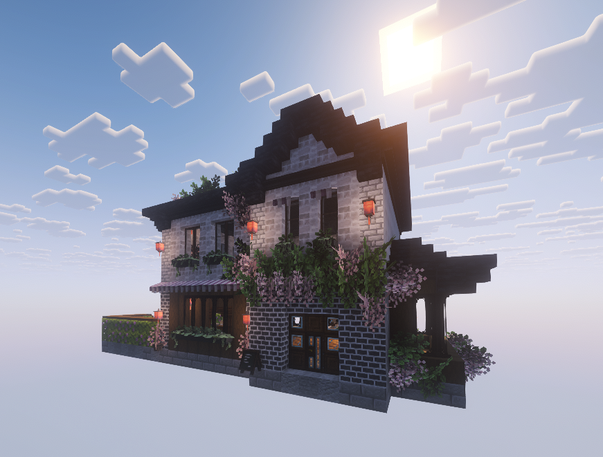
Cafetería · fachada
Fachada de ladrillo claro, tejados oscuros y vegetación rosada.
ARQUITECTURA DIGITAL · MINECRAFT
Construcciones que combinan atmósfera, detalle y una identidad propia. De una primera idea a un lugar que merece ser explorado.
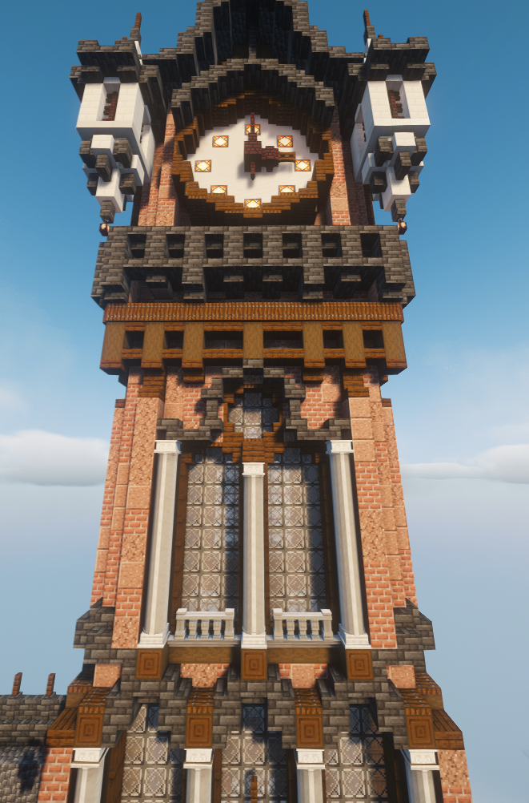
01 / PORTAFOLIO
Cada construcción cuenta una historia.
Una selección de arquitectura, ambientes y detalles.

Fachada de ladrillo claro, tejados oscuros y vegetación rosada.
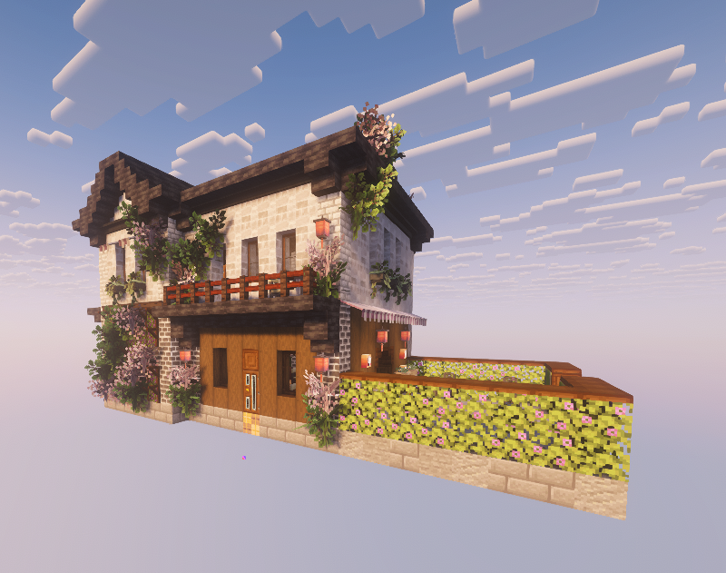
Una segunda vista del local y sus espacios exteriores.
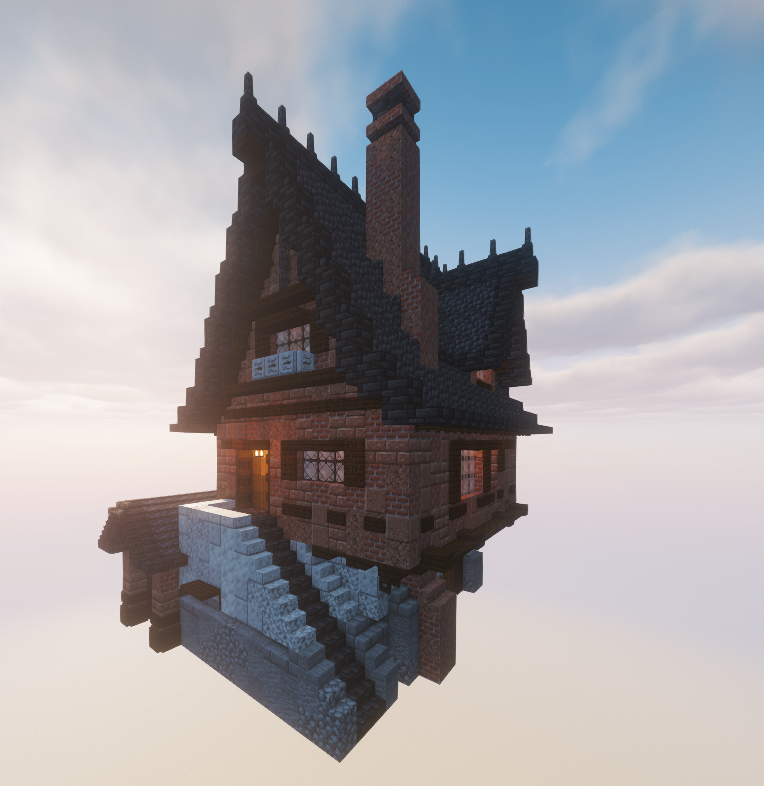
Una vivienda de inspiración medieval, con tejados inclinados y detalles de ladrillo.
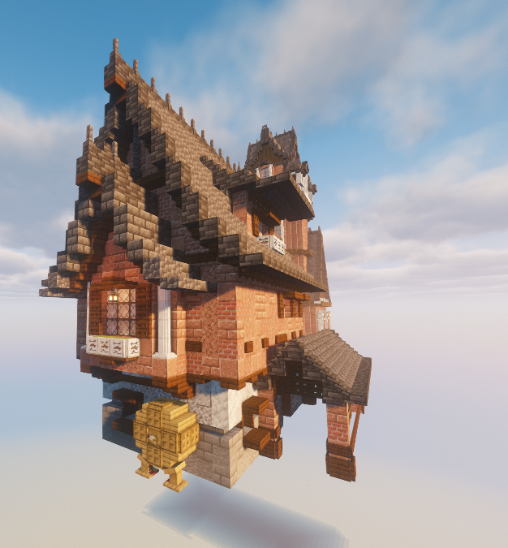
Madera, piedra y ladrillo dan forma a los volúmenes de la vivienda.
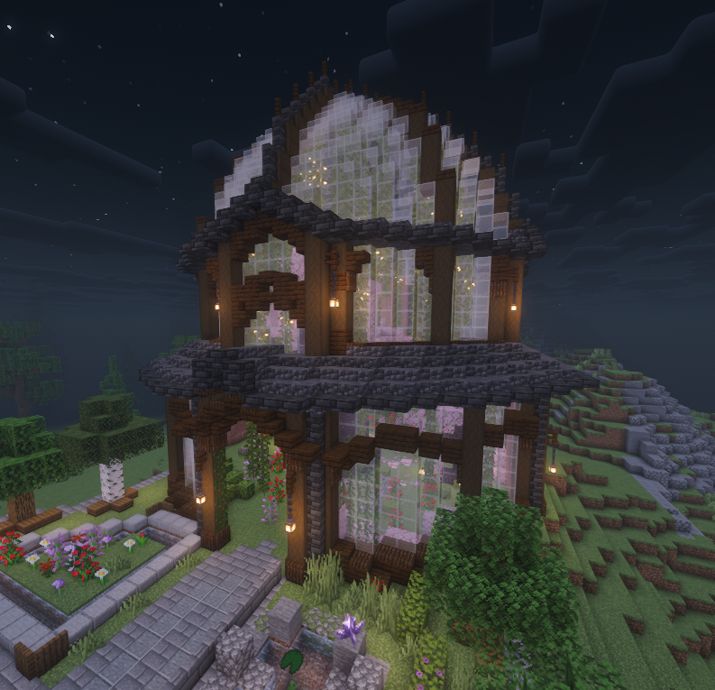
Una estructura acristalada que enmarca un árbol de flores rosadas.
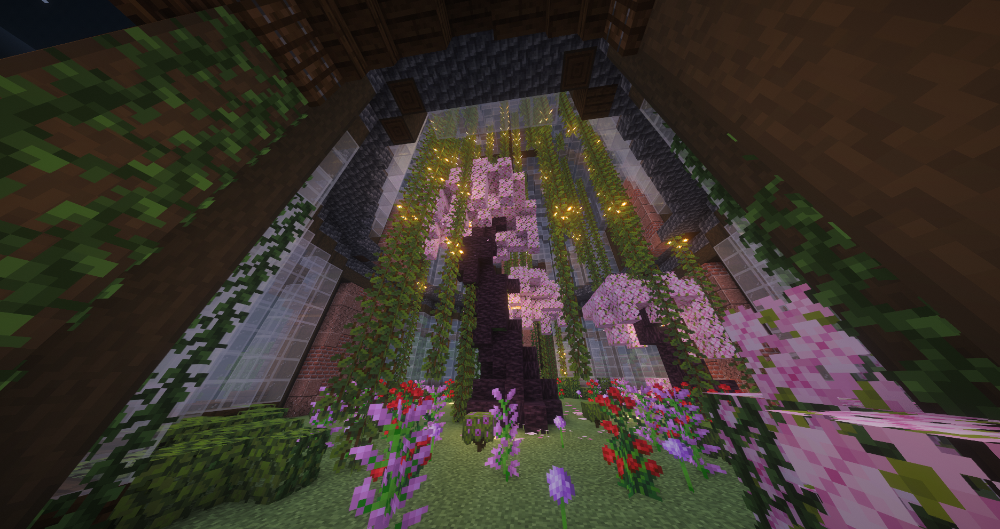
Vegetación y luz bajo una cubierta de cristal de gran altura.
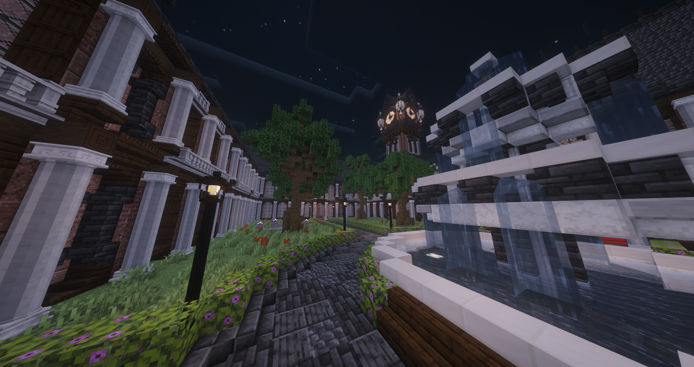
Una fuente y jardines conectan la plaza con los edificios de su entorno.
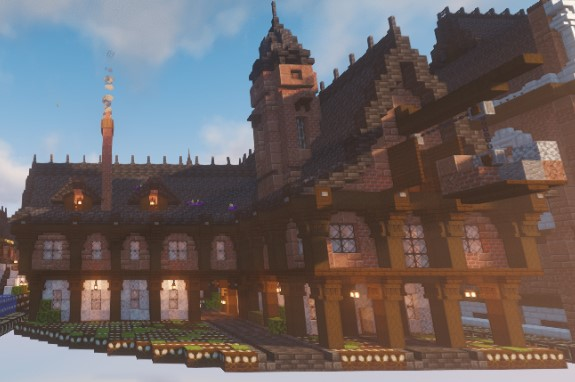
Arquitectura de piedra, madera y ladrillo con cubiertas de fuerte pendiente.
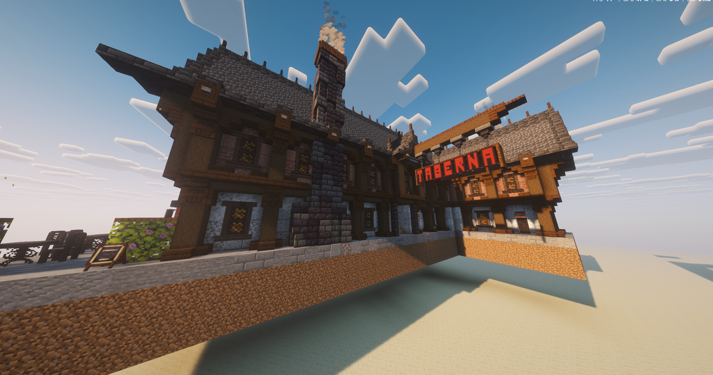
Una fachada alargada con letrero, chimeneas y tejados oscuros.
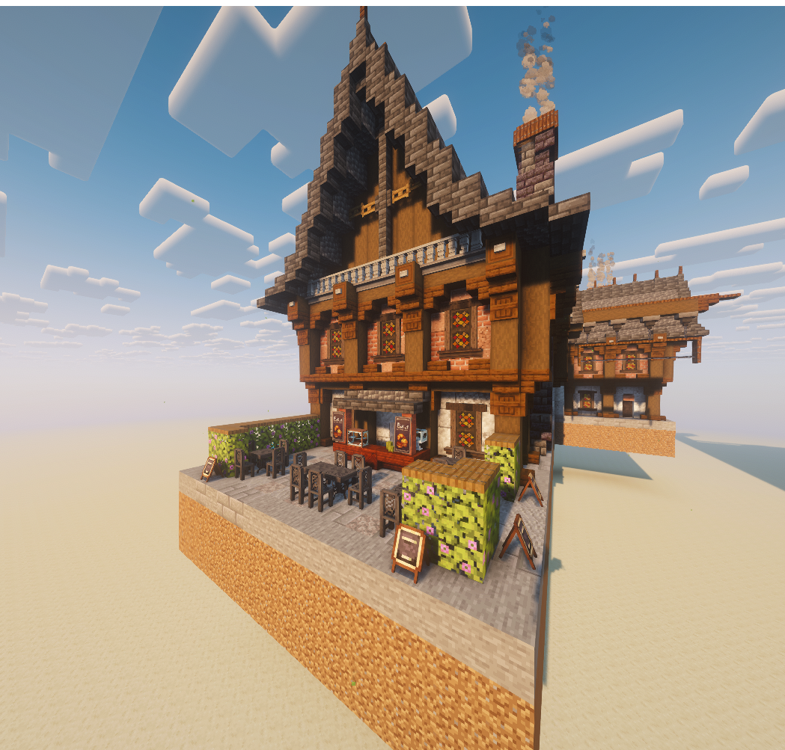
Mesas exteriores y jardines acompañan la entrada de la taberna.
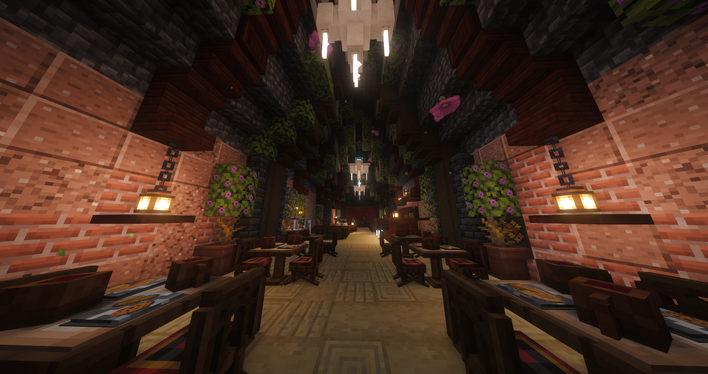
Un amplio comedor con mesas de madera y lámparas suspendidas.
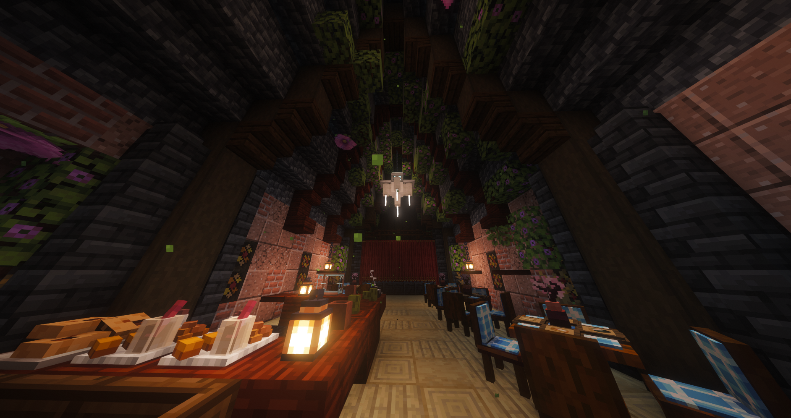
Una segunda perspectiva del salón y su distribución.
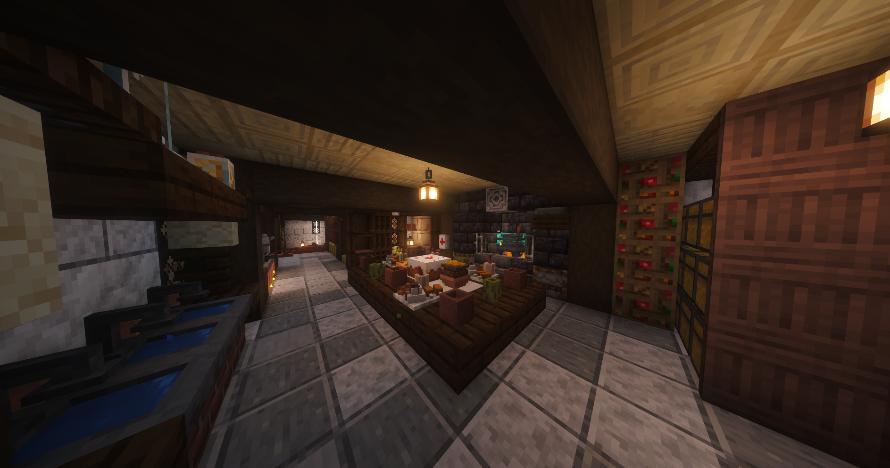
Una zona de preparación con encimeras, hornos y pequeños detalles.
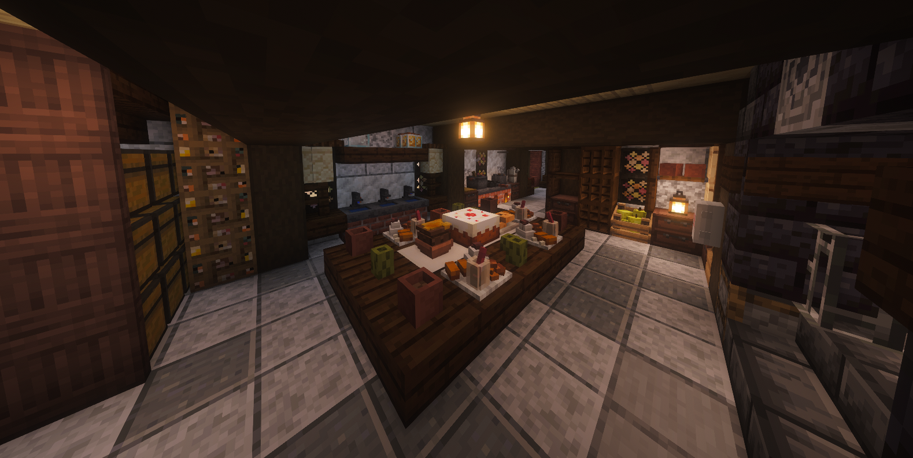
Utensilios y alimentos completan el ambiente de trabajo.
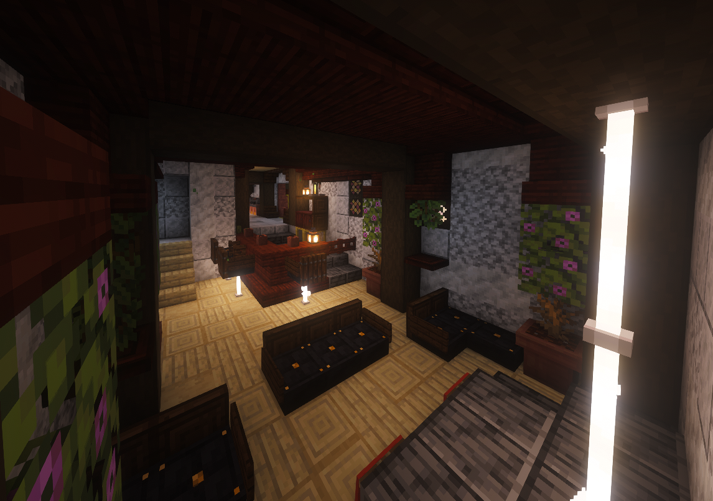
Una estancia acogedora con chimenea, asientos y luz cálida.
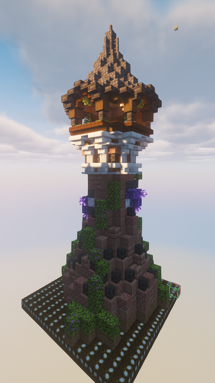
Una torre esbelta de piedra con vegetación y remate de madera.
02 / SERVICIOS
Una forma de construir para cada proyecto.
Arquitectura adaptada al estilo, la escala y la historia que quieres contar en tu mundo.
Cuéntame tu idea ↗Consulta en Patreon los diseños, esquemáticos y opciones disponibles para tu próximo proyecto.
Ver esquemáticos en Patreon ↗Puntos de encuentro, zonas de bienvenida y ambientes pensados para recorrer y compartir.
Conversar sobre un espacio ↗Tu idea → Estilo y alcance → Construcción y entrega
Definimos versión, dimensiones y formato antes de comenzar.03 / CATÁLOGO
Descubre las construcciones prefabricadas disponibles. Consulta las imágenes, la versión compatible y el formato de cada diseño antes de elegir.
Comprar esquemáticos ↗APOYA EL PROCESO
Tu apoyo en Patreon contribuye a dedicar más tiempo a nuevos diseños. Descubre allí las opciones de apoyo y sus beneficios.
Apoyar en Patreon ↗04 / CONTACTO
Cuéntame qué necesitas, el estilo que te gusta y la versión de Minecraft que utilizas. A partir de ahí, definimos el proyecto.